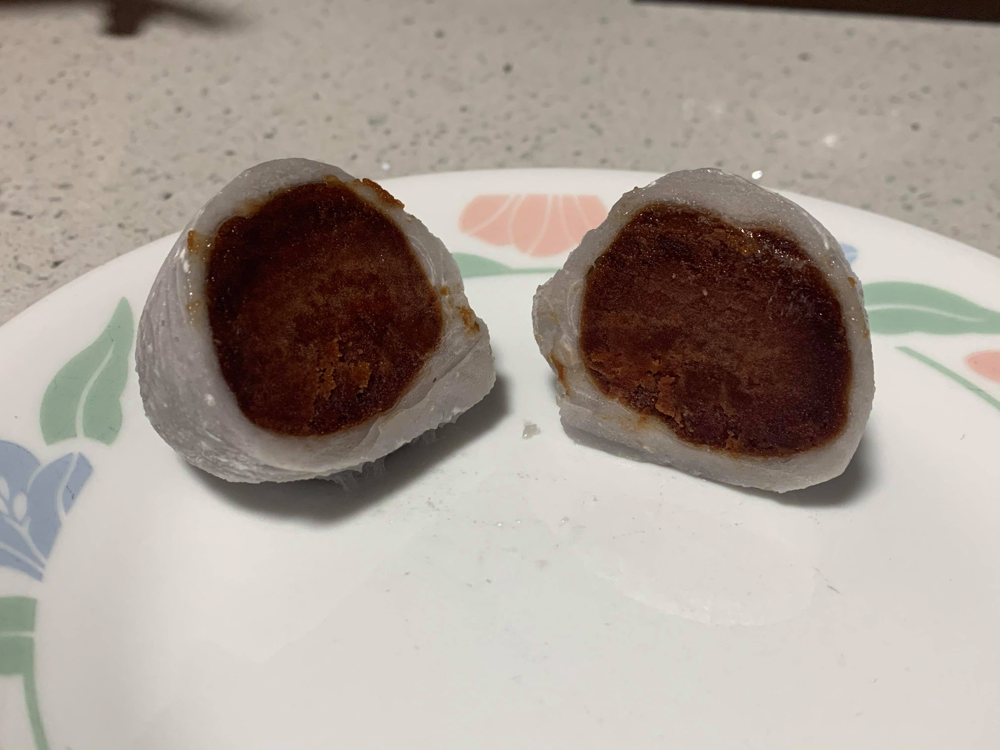

Daifuku Mochi

Ingredients:
- Mochi, cut into flat circles
- Red bean paste
Instructions:
- Optionally, freeze scoops of red bean paste for 30 minutes or until firm.
- Take a scoop of red bean paste, and place onto the center of a circle of mochi. Wrap the mochi around the red bean paste and press the edges of the dough together, squeezing to seal.